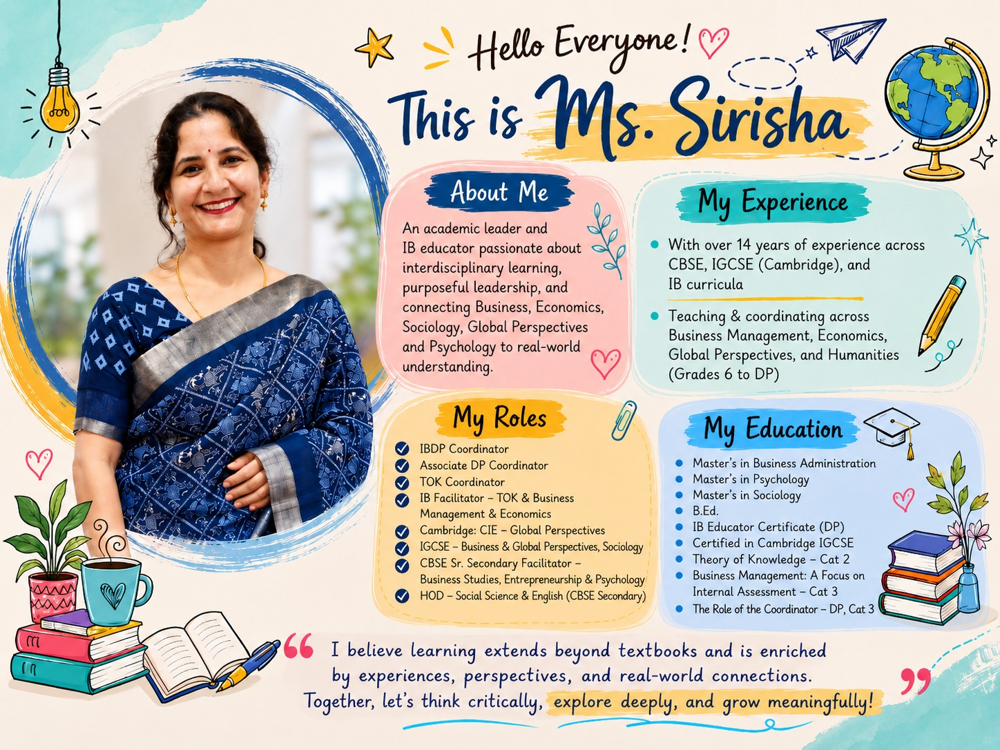

Educator
Creates meaningful learning experiences.

01 · About me
I am an educator and academic leader with approximately 14 years of experience in teaching, curriculum development, programme coordination, assessment planning, teacher mentoring, and student support.
My professional journey has allowed me to work across the International Baccalaureate, Cambridge International, and CBSE curricula, giving me a broad understanding of international education, interdisciplinary learning, assessment practices, and the diverse needs of learners.
I currently work in IB Diploma Programme coordination and academic leadership at Glendale Academy International, Hyderabad, while continuing to engage closely with teaching and learning.
My academic interests span Business Management, Economics, Psychology, Global Perspectives, Social Sciences, and educational leadership.
I particularly enjoy helping students move beyond memorisation towards inquiry, critical thinking, application, analysis and reflection.
02 · My professional identity
I see myself not only as a teacher, but as a set of connected roles that support meaningful learning and purposeful academic leadership.
Creates meaningful learning experiences.
Converts syllabus requirements into coherent learning journeys.
Uses assessment evidence to improve student achievement.
Connects students, teachers, parents, leadership and programme requirements.
Supports colleagues through observation, feedback, collaboration and professional dialogue.
Guides learners through academic challenges, transitions and personal growth.
Continuously evaluates what works, what needs improvement and what can be approached differently.
03 · Educational qualifications
My academic background has strongly influenced my approach to education and leadership.
Psychology, Sociology & Political Science
English, Mathematics & Special Education
Marketing & Human Resources
My studies in commerce, management, psychology, sociology, and political science allow me to approach education from multiple perspectives, including organisational behaviour, learner psychology, leadership, economics, business decision-making, and social systems.
04 · Professional certifications
My professional development continues through engagement with IB programme requirements, curriculum documentation, assessment practices, educational technology, teacher collaboration and academic leadership.
Strengthened my understanding of the philosophy, pedagogy and international-mindedness underpinning an IB education.
Strengthened my ability to facilitate inquiry, research, analysis of multiple perspectives, evaluation of evidence and collaborative learning.
Ongoing engagement with documentation, assessment practices, educational technology, teacher collaboration and academic leadership.
05 · Curriculum experience
Working across different curricula has helped me understand that effective teaching is not simply about completing content. It requires aligning curriculum, pedagogy, assessment, and learner needs.
Business Management · Economics · Psychology · Sociology · Theory of Knowledge support · Extended Essay support · CAS coordination and monitoring · programme documentation · assessment planning · student mentoring · teacher support and programme implementation
Business (O Level & AS / A Level) · Economics (O Level) · Global Perspectives (Lower Secondary & O Level) · Humanities and Social Sciences
Business and commerce-related disciplines · Economics · Psychology · Social Sciences · academic planning and assessment
09 · My classroom philosophy
Therefore, I aim to move learning from:
I use real-world business situations, case studies, contemporary examples, questioning, classroom discussion and structured inquiry to help students connect theory with practice. In Business Management and Economics particularly, I encourage students to ask:
10 · Business Management & Economics
Business Management, Economics, Sociology and Psychology are areas of particular academic interest to me. I enjoy examining how business decisions are shaped by economic forces, social structures, human behaviour, motivation, culture and changing societal expectations.
Business explains the organisation. Economics explains the choices and constraints. Sociology explains the social environment. Psychology explains the human behaviour behind it all.
For IB Business Management, I also integrate conceptual thinking through CUEGIS — Change, Culture, Ethics, Globalisation, Innovation and Strategy.
06 · IB Diploma Programme leadership
My coordination responsibilities include supporting the academic and operational requirements of the programme while ensuring that students and teachers understand the philosophy and expectations of the IB.
Programme planning, subject coordination, examination preparation, student registrations, academic monitoring, assessment calendars, teacher documentation, parent communication and support for the DP Core.
Programme understanding, IB terminology and philosophy, pacing and curriculum planning, unit planning, assessment design, internal assessment milestones, academic documentation, student performance analysis, teacher mentoring and training, and reflective teaching practices.
Guiding students with portfolio building, counselling students with university admissions and working closely with the Career Counselling team. I also help students understand that success in the DP depends upon consistency, responsibility, time management, independent learning and academic integrity.
06 · IB Diploma Programme leadership
My coordination responsibilities include supporting the academic and operational requirements of the programme while ensuring that students and teachers understand the philosophy and expectations of the IB.
Programme planning, subject coordination, examination preparation, student registrations, academic monitoring, assessment calendars, teacher documentation, parent communication and support for the DP Core.
Programme understanding, IB terminology and philosophy, pacing and curriculum planning, unit planning, assessment design, internal assessment milestones, academic documentation, student performance analysis, teacher mentoring and training, and reflective teaching practices.
Guiding students with portfolio building, counselling students with university admissions and working closely with the Career Counselling team. I also help students understand that success in the DP depends upon consistency, responsibility, time management, independent learning and academic integrity.
07 · Curriculum and academic planning
I regularly work on:
“What should the learner be able to understand, apply, analyse, evaluate or create by the end of this learning experience?”
08 · Assessment for learning
Assessment should provide evidence about what students understand, where misconceptions exist, which skills require strengthening, and what teachers should do next.
My academic leadership work includes developing and reviewing unit tests, formative assessments, term examinations, assessment blueprints, subject performance data, target-setting systems, student intervention strategies and competency-based questions.
In IB and Cambridge classrooms particularly, I emphasise command terms, assessment objectives, application to unfamiliar contexts, analysis, evaluation and evidence-based conclusions.
I believe students improve significantly when assessment expectations are made visible and feedback tells them specifically how to move from their current level to the next level.
11 · Teacher development & collaboration
During classroom observations, I look at lesson clarity, student engagement, questioning, classroom management, inquiry, differentiation, student agency, assessment for learning and alignment with programme philosophy.
My approach to feedback is developmental rather than judgmental. Teachers should understand both what they are already doing well and what one or two specific improvements could strengthen student learning.
I value spaces where teachers share strategies, resources, challenges and reflections rather than working in isolation.
13 · Parent partnership
Parents are important partners in a student's educational journey. I value transparent and constructive communication with parents regarding student progress, academic expectations, and areas requiring support.
16 · My leadership philosophy
I believe academic leadership should create clarity, capability and confidence.
Lead with clarity
Support with empathy
Expect with purpose
Reflect with humility
Improve continuously
14 · Professional projects & portfolio evidence
Each artefact represents an aspect of my work in translating educational philosophy into practical systems that support teaching and learning.
Use student photographs or evidence only where permission has been secured.
15 · Reflective practice
One of the most important lessons I have learnt as an educator is that professional growth requires the willingness to reflect.
What evidence tells me that it worked?
Who may not have benefited?
What could I change next time?
Leadership requires curiosity, openness to feedback and the willingness to continue learning.
18 · Professional interests
19 · My continuing professional journey
My current focus is on deepening my expertise in IB Diploma Programme leadership, Theory of Knowledge, international curriculum implementation, assessment literacy, instructional leadership, teacher development, student agency, data-informed academic interventions, and strategic educational leadership.
My long-term goal is to continue growing as an educational leader who can contribute not only to successful programme implementation but also to building strong teaching cultures and meaningful learning environments.
20 · Closing reflection
Education has given me the opportunity to continually move between two roles: teacher and learner.
Every student, classroom, colleague, challenge and leadership responsibility has added something to my understanding of education. My journey continues to be guided by the belief that academic excellence and human development should never be separated.
The ultimate purpose of education is not merely to help students achieve grades. It is to help them develop the knowledge, confidence, judgement and character required to navigate an increasingly complex world.
Leading with purpose, teaching with passion, and learning for life.
Sirisha Karamchedu
Academic Leader · IB Diploma Programme Coordinator · Educator
IB · Cambridge · CBSE